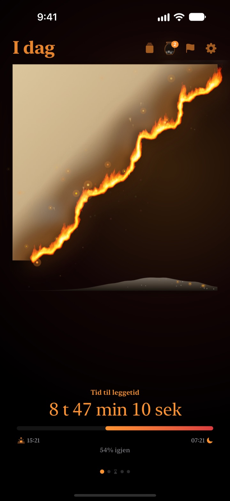
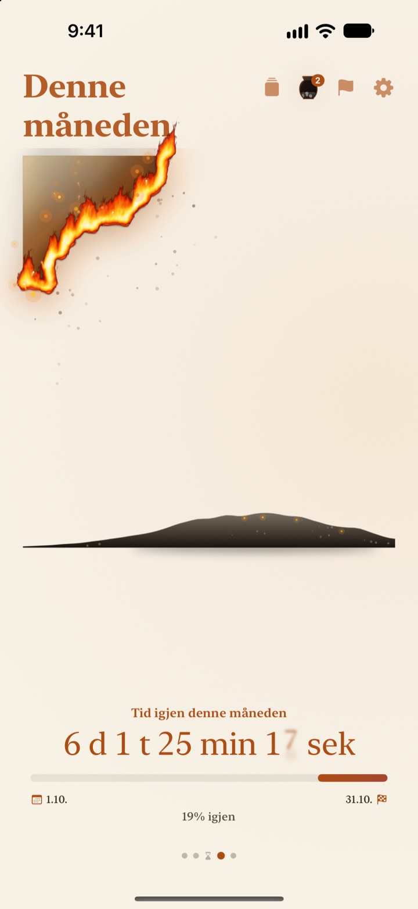
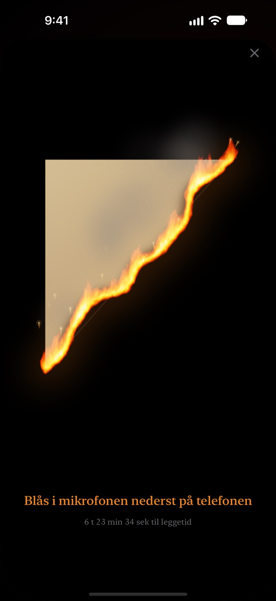
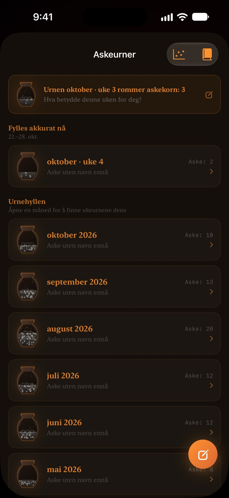

Det som er igjen av i dag,
brenner foran deg
En kveld som ser harmløs ut som et tall, føles annerledes som pergament i flammer. En halvtime før leggetid blåser du på skjermen, slukker ilden og avslutter dagen.
Det brennende pergamentet, utblåsingen og refleksjonene er gratis.

Prøv å blåse det ut
Flytt klokka til rett før leggetid, og hold så inne knappen eller blås i mikrofonen.
Har klokka plutselig blitt midnatt?
Du spiser middag, setter deg en liten stund, og så er dagen borte. Tallene på klokka ser like ut hver kveld, så du merker ikke at tiden renner ut. Brennende Pergament viser resten av dagen som pergament som brenner ned, så du oppdager det før kvelden forsvinner.
Dag, uke og år brenner ned
Fra du våkner til leggetid brenner pergamentet sakte. Se på samme måte hva som er igjen av uka, måneden og året.
Legg til et mål med dato som frist, så teller den ned ved siden av.

Blås ut dagen
Fra 30 minutter før leggetid blåser du på det brennende pergamentet og slukker ilden. Bare styrken i pusten brukes, ingenting tas opp.
Bruddstykket som blir igjen, tas vare på. Snu det og skriv en linje om dagen på baksiden.

Tiden som gikk, blir til aske
Se tilbake på dagen med én linje, og sett den som en prikk i en graf med to akser etter hva tiden gikk til. Refleksjonene samles i askeurner for uke og måned og kan leses igjen i Refleksjonsboka.
Askestrømmen viser hvor tiden ble av, med en fordelingsgraf og en glødekalender.

Kom i gang i tre steg
- 1
Velg opp- og leggetid
Trykk på tannhjulet øverst til høyre. Pergamentet tennes og slukkes etter det.
- 2
Velg periode
Sveip mellom dag, uke, måned og år, eller skjul sidene du ikke trenger, i Innstillinger.
- 3
Legg til en widget
På Hjem-skjermen eller låseskjermen ser du tiden som er igjen uten å åpne appen.
Her ser du tiden som er igjen
- Dag
- Fra du våkner til leggetid
- Uke · Måned · År
- Hva som er igjen av uka, måneden og året
- Fritid
- Ukens pergament brenner bare i timene du holder av til deg selv (Pro)
- Frister
- Tid igjen til et måls dato. Én er gratis
- Widgeter på Hjem-skjermen
- Dagens pergament i liten, middels og stor. Uke, måned, år og frister i liten og middels
- Widgeter på låseskjermen
- Rund, rektangulær og på én linje
- Dynamic Island · Live-aktivitet
- Fra en time før leggetid eller hele dagen. Velg eller slå av i Innstillinger
Utvid Dynamic Island for å se det brennende pergamentet med hele nedtellingen.
Pergamentet er gratis. Pro rommer mer.
Gratis
- Pergamenter for dag, uke, måned og år
- Blås ut flammen og samle bruddstykker
- Refleksjoner på én linje, askeurner og Refleksjonsbok
- Morgensjekk, eventuelt med søvndata fra Helse
- Widgeter for Hjem- og låseskjerm, Dynamic Island
- Én frist
Brennende Pergament Pro
- Brenn bare din egen fritid
- Temaer: Måneskinns-hanji, Celadon, Solnedgang
- Flammer: Prærieild, Glør, Stjerneskudd
- Del bruddstykkene som kort og plakater
- Eksporter Refleksjonsboka som PDF
- Tolv måneder med askestrøm
- Ubegrenset med frister
Ikke abonnement. Ett kjøp for alltid, inkludert alle Pro-funksjoner som kommer senere.
Ny enhet? Trykk på Gjenopprett kjøp i Innstillinger.
Vanlige spørsmål
Widgeten viser en annen tid enn appen.
iOS tegner ikke widgeter på Hjem-skjermen på nytt hvert sekund. Når du åpner appen, stemmer de igjen. En nedtelling sekund for sekund finner du i Dynamic Island og live-aktiviteten på låseskjermen.
Jeg blåser, men ilden slukkes ikke.
Du kan først blåse den ut 30 minutter før leggetid. Sjekk at tilgang til mikrofonen er tillatt, og blås jevnt i omtrent ett sekund nær mikrofonen nederst på iPhone. En kort lyd er ikke nok.
Blir stemmen min tatt opp?
Nei. Den måler bare hvor hardt du blåser. Ingen lyd tas opp eller lagres.
Hva vises mens jeg sover?
Etter leggetid dukker det opp et brennende hjerte som viser hvor langt natten har kommet frem til du våkner. Om morgenen spør appen om du la deg i tide; var du sent ute, starter dagens pergament tilsvarende svidd. Koblet til Helse bruker den registrert innsovningstid uten å spørre.
Når kommer varslene?
En time før leggetid. Kommer de ikke, sjekk Innstillinger > Varslinger > Brennende Pergament.
Bruker appen mye batteri?
Nedtellingen i appen endres hvert sekund, men widgetene oppdateres strømsparende av iOS, så påvirkningen er liten.
Hvor lagres dataene mine?
Opp- og leggetid, frister, refleksjoner og urner blir på enheten din. Utvikleren får bare anonym bruksstatistikk, krasjdiagnostikk og tilbakemeldinger du selv sender. Ingen reklame, ingen sporing.
Er Pro et abonnement?
Nei. Du betaler én gang og har det for alltid. På en ny enhet trykker du på Gjenopprett kjøp i Innstillinger.
Feil, ideer eller andre spørsmål? Skriv til leeo@kakao.com.